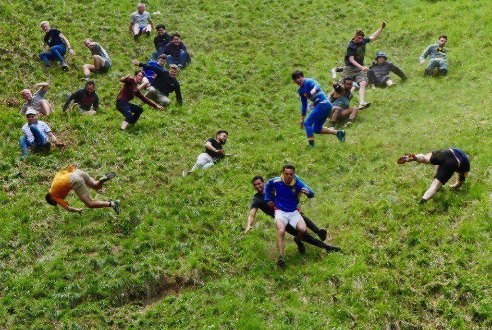

About the Competition
The Cheese Rolling Competition is a historic event held annually at Cooper's Hill in Gloucestershire, England. Participants chase a large round of Double Gloucester cheese down a steep hill, with the first to cross the finish line crowned the champion!
What started as a local tradition has gained worldwide fame, drawing adventurers, spectators, and cheese lovers from every corner of the globe.
Event Details
- Location: Cooper's Hill, Gloucestershire, England
- Date: Last Monday in May
- Entry Fee: Free for spectators, minimal fee for participants
- Pro Tip: Wear sturdy shoes and bring a sense of humor!
Gallery

Experience the chaos, fun, and excitement through these glimpses of past events!
Fun facts
- The cheese: A 7-9 pound wheel of Double Gloucester cheese is used. It's specially made for the event and can reach speeds of up to 70 mph as it rolls down the hill!
- The origins: The exact origins are unclear, but it dates back at least 200 years. Some believe it began as a pagan ritual to celebrate the arrival of spring, while others think it was a way to maintain grazing rights on the hill.
- The goal: The goal is to catch the cheese, but since it's nearly impossible to do so due to its speed, the winner is the first person to cross the finish line.
- World war crysis: During the second world war due to the shortage of cheese, a wooden cheese was used as a substitute.
More Information
Want to learn more about the event, its history, or how to participate? Click the button below to visit the official event page and dive into the details!
Learn More